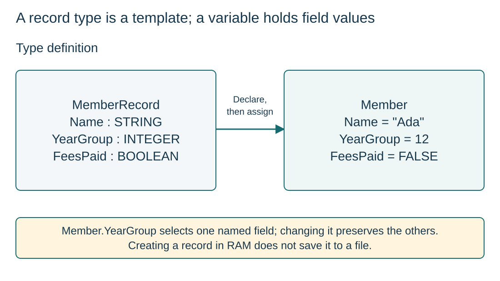

Define a record type and declare a variable
S10.02.A01S10.02.A02
Visual overview
A record type is a template; a variable holds field values

Visual transcript
- MemberRecord defines Name as STRING, YearGroup as INTEGER and FeesPaid as BOOLEAN.
- DECLARE Member : MemberRecord creates one variable. Assigning field values is a separate step.
- The illustrated values Ada, 12 and FALSE are explicitly assigned example values, not declaration defaults.
Core explanation
Related fields can have different types
A record groups related named fields under one identifier. Each field has its own type: one member can have a STRING name, INTEGER year group and BOOLEAN payment state.
Define, declare, then store
- Define the type: TYPE MemberRecord … ENDTYPE encloses the field DECLARE statements.
- Declare a variable: DECLARE Member : MemberRecord creates one variable of that type.
- Assign its fields: Store suitable values using field names. A type definition alone creates neither a member nor its field values.